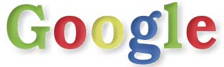

|
Stickers |
|
|
Stickers |
If you would like to include a link to Google on your webpage, feel free to download one of the following "stickers" of our main logo.
| 25% (87 x 28) |  |
| 40% (140 x 45) |  |
| 50% (175 x 56) |  |
| 60% (210 x 67) |  |
Here is our main logo full size, created using GIMP. If you want to hack on it, here is the XCF file.

We've customized our logo for the Burning Man festival and the holidays...


... and some of our faithful users have even been inspired to produce their own versions of the Google logo, including this animated GIF by Travis David Freeland:

...a GIF by Joe Williams:

...and this version by Jesse Rios, which inspired the shadowing in our current logo:



Copyright ©1999 Google Inc.